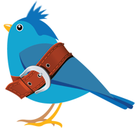
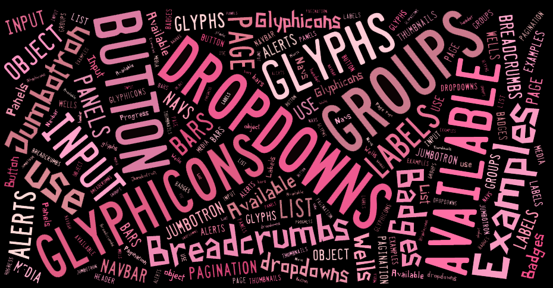

Web-basierte Anwendungen 1
Responsive Webdesign Frameworks
21. November 2013
Studiengang Medieninformatik an der Fachhochschule Köln
Campus Gummersbach
Eduard König
github@bigded
Marc Philipp Marcinkowski
github@mmarcin1
Stefania Ciola
github@chibistef
Inhalt
Grundlagen
- Größe und Auflösung des Displays variieren
- Unterschiedlichen Anforderungen an die Endgeräte
- möglichst von allen Geräten (Computer, Tablet, Smartphone) erkannt zu werden
- übersichtlich und benutzerfreundlich wie möglich präsentieren
Ziel:

Technik
- Arbeitet mit HTML5, CSS3 und JavaScript
- Gitter-System in Spalten aufgebaut
- Meist flexibles System
- Vorgefertigte Elemente
Media Queries, Eigenschaftsspezifische Stylesheets
- Größe des Gerätes, Bildschirmauflösung
- Orientierung (Hoch- oder Querformat)
- Eingabemöglichkeiten (Tastatur, Touch, Sprache)
Mobile first
- Handyfreundliches Design
- direkt im Kern des Frameworks eingebunden
- optimale Anpassung an Zoom und Touch
- optisch angenehme Designlösung für jeden Bildschirm
Beispiele
RWD Frameworks
Die Komponenten:
- Responsive Grafiken
- Responsive Typographie und Links
- Eingabefelder und Navigation
- Tabellen, Formulare und mehr
Einige RWD Frameworks:
- Bootstrap 3 - OpenSource, 12 Spalten
- Foundation 4 - Open Source, 12 Spalten
- YAML 4 - kommerziell: ca. 60-600€ je nach Einsatzzweck, 12-16 Spalten
- Gumby 2.5 - Open Source, variable Spalten
- Kube - Open Source, variable Spalten
- GroundworkCSS - Open Source, variable Spalten
- BASE - Open Source, 12 Spalten
Vorteile |
Nachteile |
|---|---|
| Anpassung der Webseite an Endgeräte | Mehr Einarbeitung als bei normalen Webseiten |
| Geräteunabhängiges arbeiten, sehr flexibel |
Inhalt und Code wird oft miteinader vermischt |
| Regelmäßige Updates verfügbar | Komplexe Gestaltungen schwerer umsetzbar |
| Wiederverwertbar für zukünftige Webseiten | |
| Schnellere Mock-Up Prozesse |
Beispiele zur Umsetzung mit Bootstrap
Warum eigentlich Bootstrap?
- schlank, intuitiv und leistungsstark
- Front-End Framework
- schnelle und einfache Web-Entwicklung
- Clientseitige Ausführung, durch Webbrowser
Horizontale Stappelung
Mit Hilfe des Tags in den Klassen col-md-* kann man die Grundraster anpassen.
Dadurch wandert die Karussellgröße immer mit.

Horizontale Stappelung
<div class="row">
<div class="col-md-1">col-md-1</div>
<div class="col-md-1">col-md-1</div>
<div class="col-md-1">col-md-1</div>
<div class="col-md-1">col-md-1</div>
<div class="col-md-1">col-md-1</div>
<div class="col-md-1">col-md-1</div>
<div class="col-md-1">col-md-1</div>
<div class="col-md-1">col-md-1</div>
<div class="col-md-1">col-md-1</div>
<div class="col-md-1">col-md-1</div>
<div class="col-md-1">col-md-1</div>
<div class="col-md-1">col-md-1</div>
</div>
<div class="row">
<div class="col-md-8">col-md-8</div>
<div class="col-md-4">col-md-4</div>
</div>
<div class="row">
<div class="col-md-4">col-md-4</div>
<div class="col-md-4">col-md-4</div>
<div class="col-md-4">col-md-4</div>
</div>
<div class="row">
<div class="col-md-6">col-md-6</div>
<div class="col-md-6">col-md-6</div>
</div>
<div class="row">
<div class="col-md-offset-3 col-md-4">col-md-offset-3 col-md-4</div>
<div class="col-md-5">col-md-5</div>
</div>
<div class="row">
<div class="col-md-12">col-md-12</div>
</div>
Typographie
Alle HTML-Überschriften, von <h1> bis <h6> stehen zur Verfügung.
<h1>...</h1>
<h2>...</h2>
<h3>...</h3>
<h4>...</h4>
<h5>...</h5>
<h6>...</h6>
Responsive Bilder
Responsive Grafiken werden mit der Klasse img-responsive eingeleitet.

Bilder
Die Bilder werden mit dem <img src="..."> -Tag eingebunden.
Verwende die Klasse img-* um die Grafiken entsprechen anzupassen.
img-rounded - abgerundete Ecken
img-circle - Kreisform
img-thumbnail - Vorschaubild
Formulare
Auch die Eingabefelder sind durch die Klasse form-control responsiv.
Schaltflächen
Verwende eine der Klassen btn btn-* um schnell einige Schaltflächen zu definieren.
<button type="button" class="btn btn-default">Default</button>
<button type="button" class="btn btn-primary">Primary</button>
<button type="button" class="btn btn-success">Success</button>
<button type="button" class="btn btn-info">Info</button>
<button type="button" class="btn btn-warning">Warning</button>
<button type="button" class="btn btn-danger">Danger</button>
<button type="button" class="btn btn-link">Link</button>
Glyphicons
In Bootstrap sind 180 Glyphicons sogenannte Schriftzeichen erhältlich.
Diese wurden kostenlos zur Verfügung gestellt von Jan Kovařík. Weitere Schriftzeichen unter der Verwendung von Bootstrap findet man hier. Ein Vorteil ist, dass diese frei skalierbar sind und der Umgang somit erleichtert wird.
Menüleiste
Eine Menüleiste kann man ganz einfach mit Hilfe der Aufzählungslisten realisieren.
Wichtig: die nav-tabs Klasse erfordert die nav Basisklasse.
Und vieles mehr...
gibt es auf der Homepage von Bootstrap. 
Übungen
Multiple Choice Fragen
Link zu den Fragen - jetzt auch responsiv
Praxis-Übungen
Rohmaterial - bei GitHub
Rohmaterial.zip - als Download